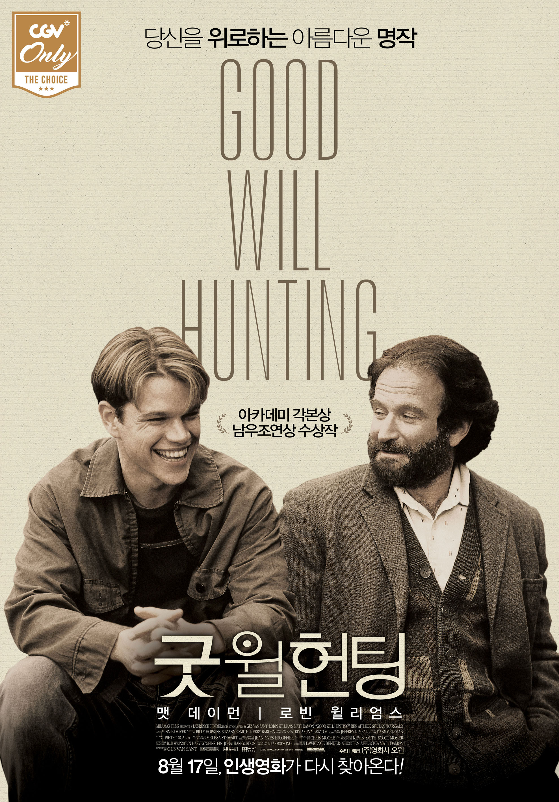

자기소개
- 이름 : BMO
- 사는 곳 : 관악구
- 안녕하세요
인생 영화 BEST5
| 순위 | 제목 | 포스터 | 줄거리 | 바로가기 |
|---|---|---|---|---|
| 1 | 판의 미로 |  |
1944년 스페인, 내전은 끝났지만 숲으로 숨은 시민군은 파시스트 정권에 계속해서 저항했고 그들을 진압하기 위해 정부군이 곳곳에 배치된다.
‘오필리아’는 만삭의 엄마 ‘카르멘’과 함께 새아버지 ‘비달’ 대위가 있는 숲속 기지로 거처를 옮긴다.
정부군 소속으로 냉정하고 무서운 비달 대위를 비롯해 모든 것이 낯설어 두려움을 느끼던 오필리아는 어느 날 숲속에서 숨겨진 미로를 발견한다.
그리고 그곳에서 자신을 “산이고 숲이자 땅”이라 소개하는 기괴한 모습의 요정 ‘판’과 만난다.
오필리아를 반갑게 맞이한 판은, 그녀가 지하 왕국의 공주 ‘모안나’이며 보름달이 뜨기 전까지 세 가지 임무를 끝내면 돌아갈 수 있다고 알려주면서 미래를 볼 수 있는 “선택의 책”을 건넨다.
오필리아는 전쟁보다 더 무서운 현실 속에서 인간 세계를 떠나 지하 왕국으로 돌아가기로 결심하게 되는데…
용기, 인내, 그리고 마지막 임무…
판의 미로가 다시 열리고, 환상과 현실의 경계가 무너진다!
|
클릭 |
| 2 | 어바웃 타임 |  |
모태솔로 팀(돔놀 글리슨)은 성인이 된 날, 아버지(빌 나이)로부터 놀랄만한 가문의 비밀을 듣게 된다.
바로 시간을 되돌릴 수 있는 능력이 있다는 것!
그것이 비록 히틀러를 죽이거나 여신과 뜨거운 사랑을 할 수는 없지만,
여자친구는 만들어 줄 순 있으리..
꿈을 위해 런던으로 간 팀은 우연히 만난 사랑스러운 여인 메리에게 첫눈에 반하게 된다.
그녀의 사랑을 얻기 위해 자신의 특별한 능력을 마음껏 발휘하는 팀.
어설픈 대시, 어색한 웃음은 리와인드! 뜨거웠던 밤은 더욱 뜨겁게 리플레이!
꿈에 그리던 그녀와 매일매일 최고의 순간을 보낸다.
하지만 그와 그녀의 사랑이 완벽해질수록 팀을 둘러싼 주변 상황들은 미묘하게 엇갈리고,
예상치 못한 사건들이 여기저기 나타나기 시작하는데…
어떠한 순간을 다시 살게 된다면, 과연 완벽한 사랑을 이룰 수 있을까?
|
클릭 |
| 3 | 굿 윌 헌팅 |  |
“윌, 네 잘못이 아니야.”
수학, 법학, 역사학 등 모든 분야에 재능이 있는 ‘윌’(맷 데이먼)은
천재적인 두뇌를 가지고 있지만 어린 시절 받은 상처로 인해
세상에 마음을 열지 못하는 불우한 반항아.
절친인 ‘처키’(벤 애플렉)와 어울리던
‘윌’의 재능을 알아본 MIT 수학과 ‘램보’ 교수는
대학 동기인 심리학 교수 ‘숀’(로빈 윌리엄스)에게 그를 부탁하게 되고
거칠기만 하던 ‘윌’은 ‘숀’과 함께 시간을 보낼수록
상처를 위로 받으며 조금씩 변화하기 시작하는데…
|
클릭 |
| 4 | 코코 |  |
영원히 기억하고 싶은 황홀한 모험이 시작된다!
뮤지션을 꿈꾸는 소년 미구엘은 전설적인 가수 에르네스토의 기타에 손을 댔다 ‘죽은 자들의 세상’에 들어가게 된다.
그리고 그곳에서 만난 의문의 사나이 헥터와 함께 상상조차 못했던 모험을 시작하게 되는데…
과연 ‘죽은 자들의 세상’에 숨겨진 비밀은? 그리고 미구엘은 무사히 현실로 돌아올 수 있을까?
제작노트 보기
|
클릭 |
| 5 | 어거스트 러쉬 |  |
꿈보다 아름답던 단 하룻밤, 그 이후..
음악이 있는 한, 우리는 다시 만나게 될 거야
매력적인 밴드 싱어이자 기타리스트,
첫 눈에 반한 그녀를 단 한번도 잊어본 적 없지만
그녀를 놓친 후 음악의 열정을 모두 잃어버린 남자 ‘루이스’
촉망 받는 첼리스트였지만 사랑하는 사람과 아이를 떠나 보내고
11년을 늘 그리움 속에 살았던 여자 ‘라일라’
그리고, 두 사람 사이에 운명처럼 찾아 온 기적 같은 소년,
눈을 감으면 세상의 모든 소리가 음악이 되는 아이 ‘에반’
마법 같이 신비로운 어느 가을 밤, 그리고 다시 뉴욕.
‘어거스트 러쉬’의 음악이 불러 낸 기적은 그들을 다시 만나게 할 수 있을까?
|
클릭 |